6000
BC .........................4000
BC
| 2000 BC | 1000 BC |
(Old Stone Age)

| Olduvai
Gorge, Tanzania. Photo: Derek Roe |
| Skull
of early human species (australopithecus africanus) |

| Stone chopper, Olduvai Gorge, Tanzania |
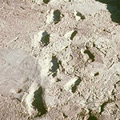
| Footprints
of early humans, fossilised in volcanic ash, Laetolil, Tanzania. Photo: Peter Jones |
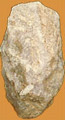
| Stone
cleaver, Olduvai Gorge, Tanzania |

| Flintcore
and flake, Baker's Hole, Kent |
| Flint
handaxe, Gray's Inn Road, London |
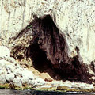
| Palaeolithic site, Goram's Cave, Gibraltar |
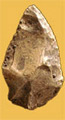
| Flint point, Le Moustier, France |
| Stone figurine - the Willendorf ' Venus', Austria |
| Ivory carved spearthrower, Montastruc, France |

| Lion
Panel cave painting, Chauvet Pont-d'Arc, France. Photo: French Ministry of Culture and Communication |
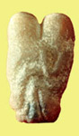
| Stone figurine, Ain Sakhri, Judean Desert |
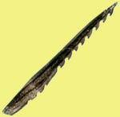
| Bone serrated point, Skipsea, Yorkshire |
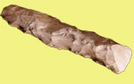
Flint
adze, Farnham, Surrey
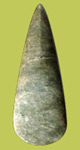
| Chambered
tomb at Pentre Ifan,Dyfed. Photo: Jean Williamson |
Jadeite
axe, Canterbury,Kent |
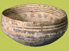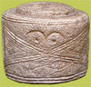
| Painted
pottery bowl, Samarra, Iraq |
Limestone decorated drum, Folkton, Yorkshire |
|
Pottery
figurine
Vinca, Serbia |
| Stonehenge,
Wiltshire. Photo: © English Heritage |
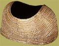
Gold
cape, Mold, Flintshire
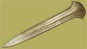
| Bronze ceremonial dirk, Oxborough, Norfolk |

| Stone
house foundation, Grimspound, Dartmoor. Photo: © English Heritage |
| Bronze
Cauldron, River Thames at Battersea |
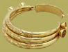
| Gold collar, Sintra, Portugal |
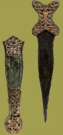
| Iron
Dagger and sheath, River Thames Coookham |
|
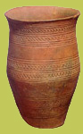
Pottery Beaker, Barnack, Cambridgeshire |
| 2000 BC | 1000 BC |